Návrh 3: posouzení, kontrolní seznamy a srovnání
Je návrh 3 skutečně přínosnější než návrh 2?
| Slabina návrhu 2 | Řešení v návrhu 3 | Typ změny |
|---|---|---|
| Detail produktu je skoro stejný jako v návrhu 1; cena a tlačítko odjedou při čtení popisu | Nákupní box (cena, varianty, košík, kód, měrná cena, doprava) zůstává na počítači vedle obsahu viditelný; popis má čitelnou šířku řádku (max. ~72 znaků) | funkce / čitelnost |
| Schéma 1–8 na úvodu = malé dlaždice bez nákupní akce | Schéma jako plnohodnotné produktové karty s důvodem „proč ve schématu“ a tlačítkem | nákup |
| Tlačítko vedle ceny se na úzkých kartách mačká; stav a varianty na dvou místech | Tlačítko přes celou šířku karty, stav + počet variant v jednom řádku, měrná cena vedle ceny | nákup / přehlednost |
| Úvod má 7 sekcí, „3 kroky“ se překrývají s výběrem druhu | 4 sekce: výběr druhu → schéma (nákup) → problémy → poradna | kompozice |
| Přírodní varianta je hodně béžová, produkty v ní zanikají | bílé plochy a karty, teplá bílá místo béžové, béžový je jen jeden pás; zelená nese značku, oranžová jen nákupní tlačítka | vizuál |
| Chyba: drobečková navigace u oleje ukazuje „Škubání peří“ | vybírá se nejkonkrétnější kategorie („Oleje s/bez vitamínu D3“) | oprava |
Co návrh 3 neřeší (a žádný další vizuální návrh nevyřeší): fotky, které neukazují produkt, a chyby v textech na e-shopu. To je teď pro profesionální dojem důležitější než další grafické kolo. Doporučuji brát návrh 3 jako základ a další energii dát do fotek a obsahu (body 3 a 4 níže).
Co musí Jana odborně potvrdit
Do návrhů jsem nepřidala žádná nová zdravotní ani výživová tvrzení. Následující věci jsou ale moje zobecnění, zkrácení nebo odvození z jejích textů. Bez jejího potvrzení nesmí jít do ostrého e-shopu.
| # | Co | Odkud to je | Otázka pro Janu |
|---|---|---|---|
| 1 | Rozdělení 29 druhů na malé / střední / velké | můj odhad – e-shop ho neuvádí | Je zařazení správné? (např. Korela a Kakariky mezi malými, Alexandr mezi středními) |
| 2 | Clay Bloc Mini → malí papoušci | název: „pro menší papoušky“ | Platí pro celou skupinu „malí“? |
| 3 | Clay Bloc Amazon River → střední a velcí | odvozeno (protiklad k Mini) – e-shop velikost neuvádí | Je to správně? Hodí se i pro malé druhy? |
| 4 | Divoká a travní semena → malí; MIX namáčení → střední a velcí | NÁVODY: „hlavně pro malé druhy“ / „MIX NAMÁČENÍ pro větší druhy“ | Odpovídají „větší druhy“ mé skupině střední + velcí? |
| 5 | Mix hmyzu → malí; Sušený hmyz → střední a velcí | názvy produktů | Je vhodné hmyz doporučovat všem druhům ve skupině? |
| 6 | Travní semena → 11 „australských“ druhů (Andulka, Andulka ALL, Korela, Neoféma, Rosela, Barnard, p. královský, p. nádherný, p. horský, p. zpěvavý, p. červenokřídlý) | citace „nutná pro zdraví andulek, ale i ostatních australských“ – výběr druhů je můj | Je seznam úplný a správný? |
| 7 | Andulka a „Andulka ALL“ → Andulka balíček + OrganiCa pro andulky; ostatní → balíček č. 2–8 | balíček 2–8 „vyjma andulek“; co přesně je „Andulka ALL“, nevím | Co je „Andulka ALL“ a platí pro ni andulkový balíček? |
| 8 | Na stránce každého druhu: „Začněte směsí START“ | perex kategorie Zrniny + NÁVODY | Platí pro všechny druhy? |
| 9 | Výběr produktu do kroků schématu: krok 3 = Pyl (ne Multipap), 4 = Clay Bloc Amazon River (ne Mini), 5 = Pivovarské kvasnice 05a (ne odhořčené 05), 6 = Humac (ne Biochar) | moje volba výchozího produktu | Které produkty mají být výchozí? |
| 10 | Zkrácené důvody „proč ve schématu“ u kroků 1–8 | zkrácené citace z NÁVODŮ; kroky 4 a 7 mají stejný text | Schválit znění |
| 11 | Krátké názvy a podtitulky všech 57 produktů (např. „Healer Animal gel – hojení ran“, „Konopný olej – svědění, stres, škubání“, „Papendo – přírodní antiparazitikum“) | moje formulace podle jejích názvů a popisů | Projít seznam (soubor names.json), zejména podtitulky se zdravotním kontextem |
| 12 | Texty dlaždic „Co vašeho papouška trápí?“ a to, kam vedou | převzato z názvů kategorií a článků | Schválit propojení (např. „Nervozita, agresivita“ → její stránka o škubání) |
| 13 | Úvodní věta „Zdravý papoušek začíná v misce“ + „doplňky, které zrní a zelenina neobsahují“ | parafráze jejího „JEN ZRNÍ a ZELENINA NESTAČÍ“ | Schválit jako marketingový text |
| 14 | „Doprava od 150 Kč, osobní odběr po domluvě zdarma“ | ceny dopravy z e-shopu k 10. 10. 2026 | Je to aktuální? |
| 15 | Fotky „před a po“ v úvodu | z úvodní stránky jejího e-shopu | Jsou to její papoušci / má souhlas majitelů? |
1. Co lze převést do současného Shoptetu
Na paputo.cz běží Shoptet se šablonou č. 13. Už teď funguje: karusel bannerů, dlaždice podkategorií s obrázky, filtry, řazení, štítky (např. „Tip“), našeptávač vyhledávání, měrná cena a varianty s rozdělenými výběry. Shoptet umožňuje vkládat vlastní HTML/CSS/JS kódy v administraci (dokumentace Shoptet). Dostupnost podle tarifu a šablony je potřeba ověřit v administraci.
| Prvek návrhu | Převod | Jak |
|---|---|---|
| Barvy, písma, zaoblení, tlačítka, vzhled karet | ano | nastavení šablony + vlastní CSS |
| Karusel „před a po“, pruh důvěry, bannery | ano | nativní bannery / HTML blok na úvodu |
| Menu s podkategoriemi | ano | nativní; vícesloupcové mega menu podle šablony, jinak CSS |
| Štítky „č. 02“, „Balíček“, „Služba“ | ano | nativní příznaky produktů |
| Cena „od“, měrná cena, dostupnost na kartě | ano | nativní (už je na jejím webu) |
| „N variant“ na kartě, tlačítko „Vybrat variantu“ | částečně | Shoptet u produktů s variantami vede na detail; text a vzhled přes šablonu/CSS |
| „Proč ve schématu“ na kartě a v detailu | částečně | krátký popis produktu nebo vlastní pole + úprava šablony |
| Nákupní box viditelný při čtení (detail) | částečně | CSS v šabloně, ověřit chování |
| Stránky druhů (Žako, Korela…) | částečně | jako kategorie „Podle druhu → Žako“ s přiřazenými produkty a textem (nativně). Tabulka směsí s předvybranou variantou zrnin vyžaduje vlastní JS – ověřit, jestli šablona umí předvybrat variantu z odkazu |
| Návody mimo zboží, poradna | ano | převést na Stránky / Články (nativní) |
| Služby (konzultace, poukaz, směs na míru) | ano | produkty se štítkem „Služba“ |
| Vyhledávání se skupinami, bez diakritiky, se synonymy | ne nativně | Shoptet má vlastní našeptávač; pokročilé hledání = placený doplněk vyhledávání (ověřit nabídku) |
| Spodní mobilní lišta, lepivé „Do košíku“ na mobilu | částečně | vlastní CSS/JS, ověřit kolize se šablonou |
| Filtr „jen skladem“, řazení | ano | nativní filtry kategorie |
2. Varianty, ceny a košík
| V návrhu (ukázka) | Ve skutečném Shoptetu | |
|---|---|---|
| Varianty | převzaté z e-shopu, výběr funguje (zrniny: druh × balení × typ = 289 existujících kombinací z 580 možných; neexistující kombinace hlásí „není k dispozici“) | nativní varianty z parametrů – zrniny už dnes takto fungují (Shoptet má i vlastní hlášku o nedostupné kombinaci) |
| Ceny a dostupnost | snímek k 10. 10. 2026 – neaktualizují se | živé z administrace |
| Košík | nefunguje – tlačítko otevře produkt na paputo.cz a vybraná varianta se nepřenese | nativní košík, doprava, platba |
| Doporučené úpravy dat | sjednotit zápis variant („30ml“ × „50 ml“, „1kg“ × „1 kg“), u dárkového poukazu doplnit „Kč“, seřadit hodnoty parametrů logicky (podle výrobce doplňku Dativery je Shoptet sám neřadí) | |
3. Fotografie – výměna a práva
Licence nelze z webu ověřit. Níže jsou jen signály, které je potřeba prověřit.
| Riziko | Co | Proč |
|---|---|---|
| vysoké – právní | Směs na míru (330) | na fotce je vodoznak National Geographic |
| vysoké – právní | Banner „jak vybírat“ na úvodu | název souboru istockphoto-470798481 = fotobanka iStock; je nutné mít licenci |
| ověřit licenci | Obrázky 8 kategorií (pngegg*.png) | stažené z pngegg.com, kde licence bývají nejasné. Návrh 3 je nepoužívá |
| ověřit licenci | Andulky v kategorii Andulka | soubor nese jméno fotografa (catherine-boreham…) |
| ověřit původ | fotky papoušků a přírody místo produktu: Konopný olej (126), Clay Bloc Amazon River (102), OrganiCa andulky (120), Mix hmyzu (231), Travní semena (153), Oregánový olej (159), Rakytníkový olej (267), Dárkový poukaz (336) | neznámý původ; navíc neukazují, co zákazník kupuje |
| vyměnit (důvěryhodnost) | Multipap (99), Pyl (93), Kvasnice (72), Humac (78) – vypadají jako generované ilustrace; Olej D3 (87) je textový banner | zákazník nevidí skutečné balení |
| vyměnit (kvalita) | Ananas (177), Cantaloupe (180), Papája (183), Mix hmyzu (231), Oregánový olej (159), Fauna Parrot (156) | rozlišení pod 300 px |
| doplnit | Pivovarské kvasnice odhořčené (436), Markus Mühle (437) | bez fotky |
| pravděpodobně v pořádku | fotky výrobců: Versele-Laga (108, 342), Healer (418, 421), Aroma Sanitol a Desinf (204, 207), Fauna Parrot (156), Papendo (63), Help balzám (400) | obvykle smí používat prodejci; potvrdit u dodavatelů |
Doporučení k jednotné prezentaci: skutečné balení na bílém pozadí, čtverec min. 1000 × 1000 px, produkt zabírá asi 80 % plochy, druhá fotka surovina zblízka. Stačí telefon u okna a bílý papír.
4. Chyby obsahu, které je nutné odstranit před spuštěním
| Priorita | Chyba |
|---|---|
| blokující | 9 nefunkčních odkazů (404) – seznam v prvním auditu (AUDIT-paputo-2026-10-10.md) |
| blokující | Balíček 2–8 (415): v popisu text „Popis produktu není dostupný“ |
| blokující | 3 návody vedené jako zboží za 0,01 Kč jdou vložit do košíku (372, 397, 273) |
| blokující | Fotka s vodoznakem National Geographic (330); licence iStock banneru |
| blokující | Nesoulad gramáže: Rakytník plod – název 100 g, adresa 50 g (279); Směs na míru – název od 10 kg, adresa od 5 kg (330) |
| blokující | Překlepy v názvech, které jsou vidět ve výpisech a vyhledávání: „bez curku“ (379), „45druhů )“ (111), „12a .“ (391) |
| blokující | Chybný latinský název: rybíz „Rubus ileus“ (382) – správně Ribes nigrum |
| důležité | 2 produkty bez fotky (436, 437) |
| důležité | Překlepy v popisech: „ahrada“, „3 duhy“ (174), „zajeti“ (87), „nebo nebo“ (111), „bylinná posilovač“ (412), „požadavku“ (330); Healer × Healler (418/421) |
| vhodné | 57× mezera před tečkou/čárkou, 43× číslo bez mezery („100g“), nejednotný zápis variant |
5. Co je zatím jen ukázka (není napojené)
| Funkce | Stav v návrhu |
|---|---|
| Košík, „Do košíku“, „Objednat“ | jen odkaz na produkt na paputo.cz, nic se nevkládá |
| Účet / přihlášení | odkaz na paputo.cz |
| Ceny, dostupnost, varianty | snímek k 10. 10. 2026, neaktualizuje se |
| Vyhledávání | funguje, ale jen v prohlížeči nad snímkem dat, ne přes Shoptet |
| Stránky druhů a doporučení k druhům | vypočítá je návrh; v e-shopu neexistují a čekají na potvrzení Janou |
| Řazení, filtr „jen skladem“ | funguje nad snímkem dat |
| Spodní mobilní lišta, lepivé tlačítko | funkční jen jako design |
| Doprava „od 150 Kč“ | text z dat 10. 10., žádný výpočet |
| Kontaktní formulář, cookies lišta, analytika, platby | v návrhu nejsou |
| PDF taháky, obrázky v popisech | skutečné soubory z paputo.cz (odkazy) |
Srovnání: návrh 2 Přírodní · návrh 2 Moderní · návrh 3
Kliknutím otevřete obrázek v plné velikosti. Detail produktu = Olej s vitamínem D3.
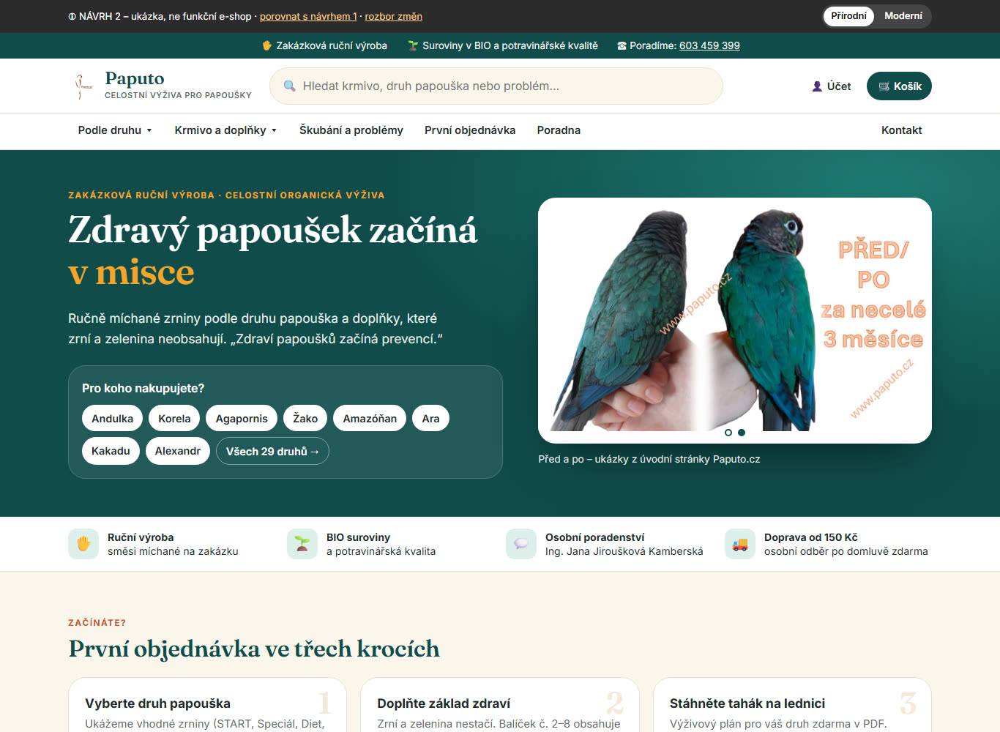
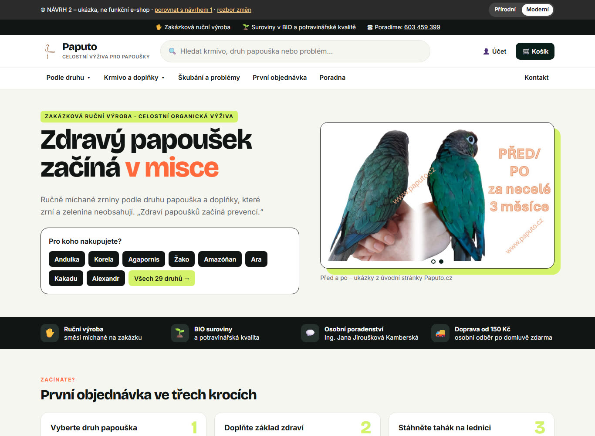
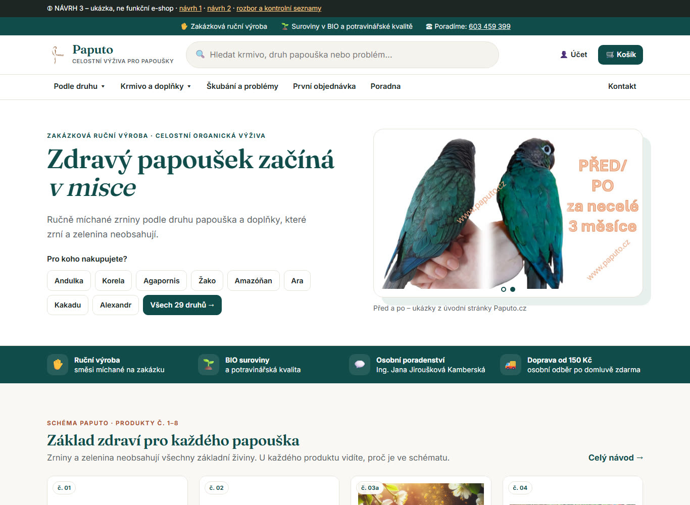
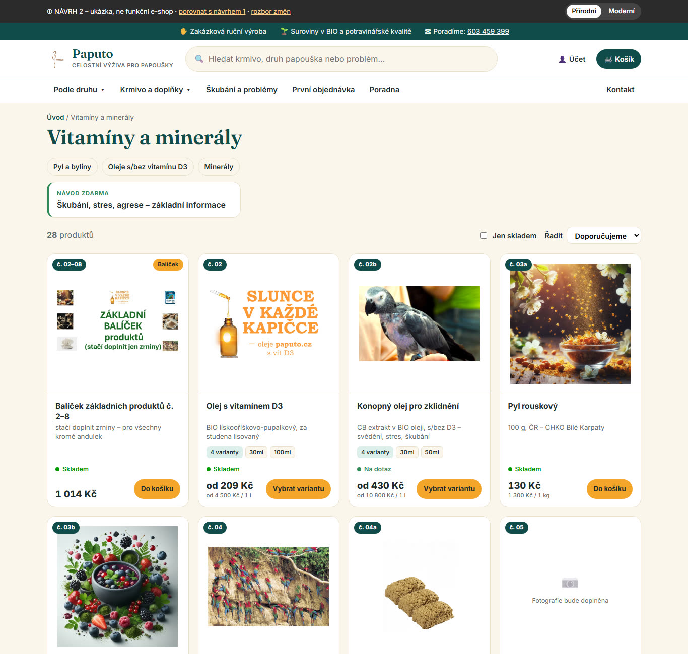
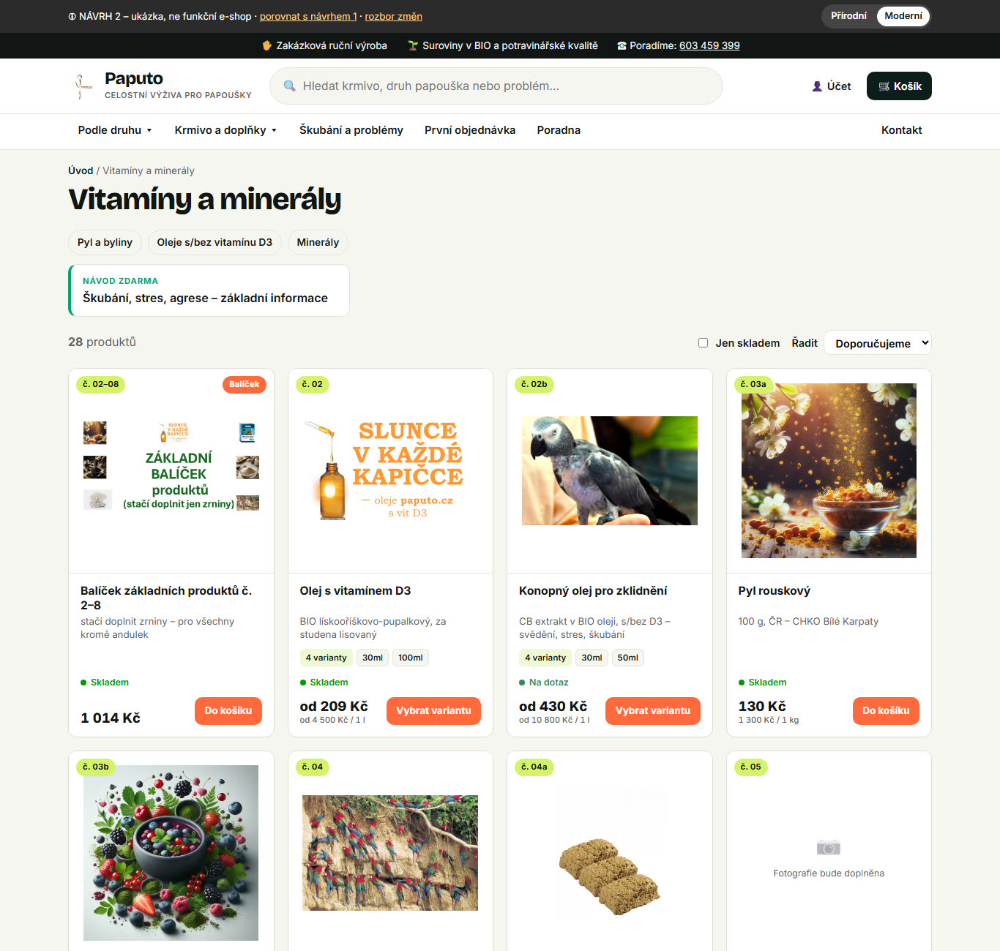
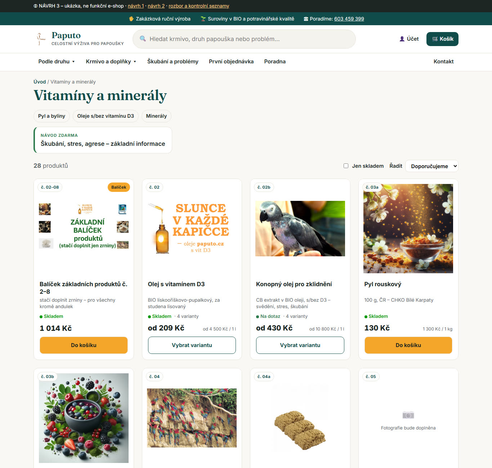
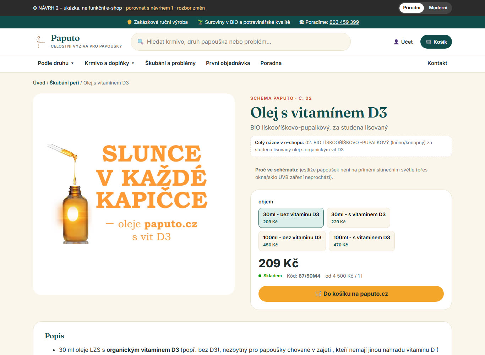
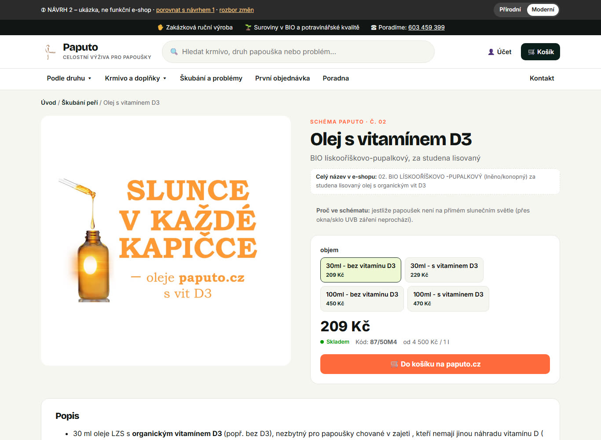
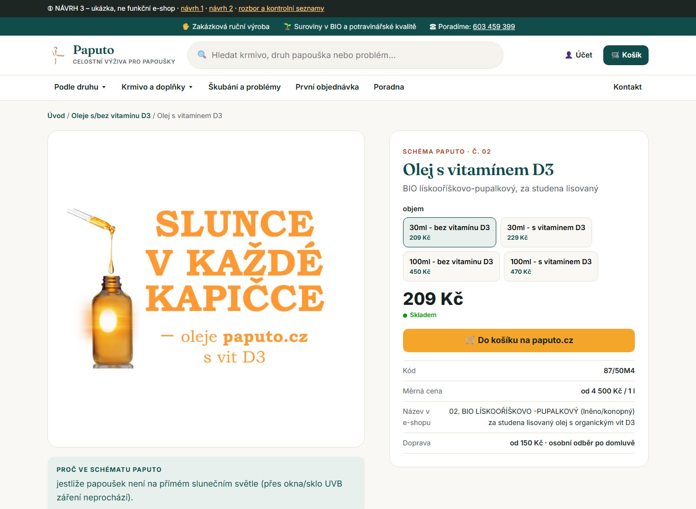

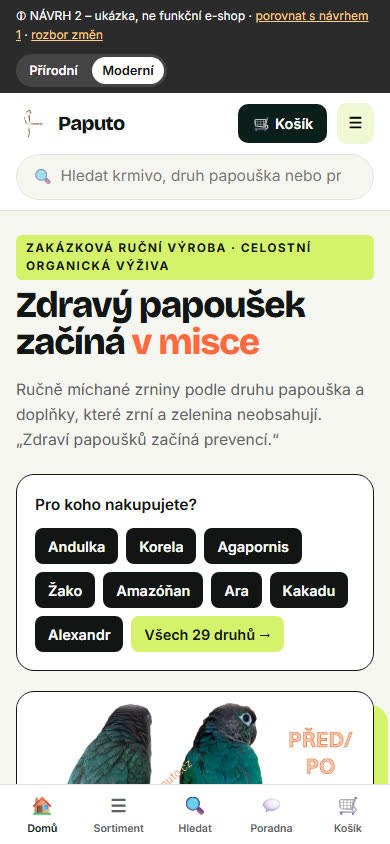
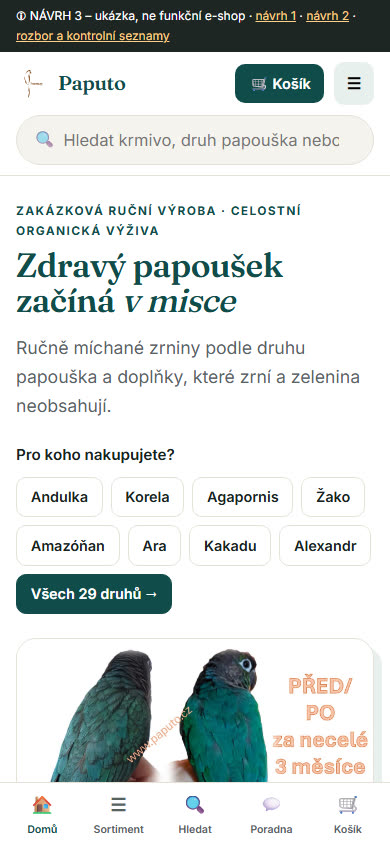
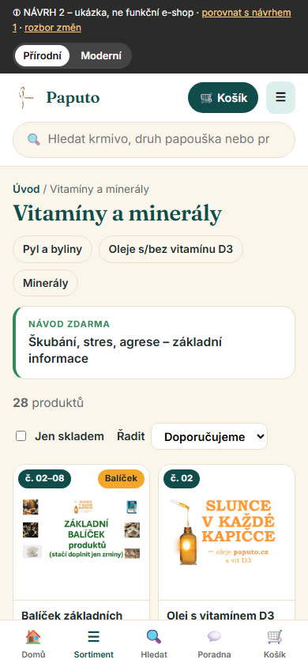
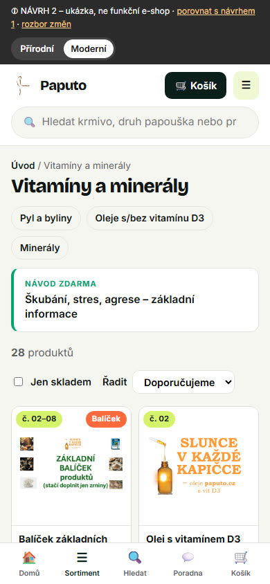
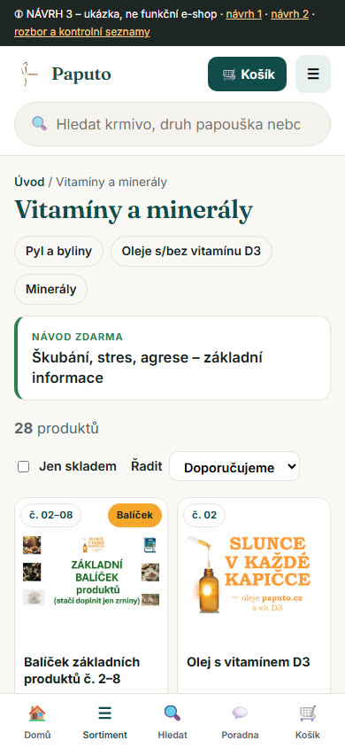
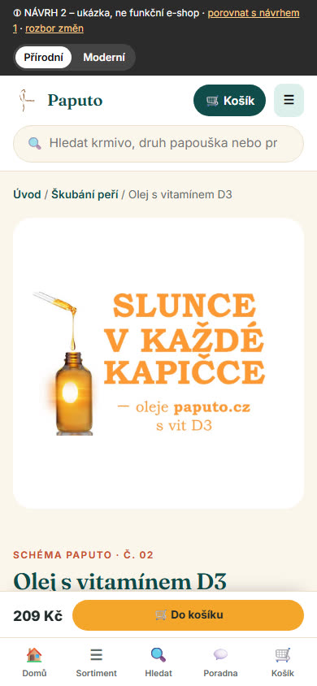
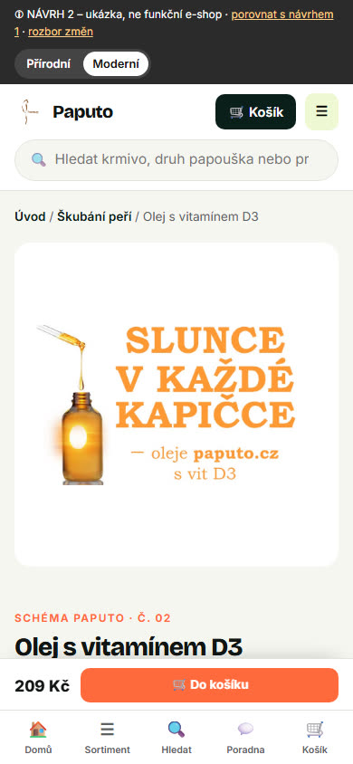
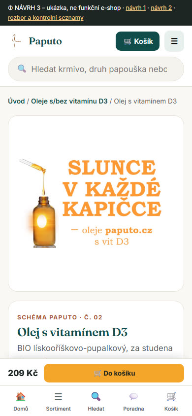
Známá chyba návrhu 2 (neopravovala jsem ho, protože má zůstat beze změny): u oleje a dalších produktů ukazuje drobečková navigace „Škubání peří“ místo vlastní kategorie. V návrhu 3 je to opravené.